A Decision Tree and a Logistic Regression, both implemented from scratch and compared against scikit-learn
Cardiovascular disease is the leading cause of death worldwide, and a good part of the work of a cardiology clinic is deciding, from a handful of quick measurements, which patients need further tests. We wanted to see how far a simple model can get with only that kind of routine information. The question we set ourselves was:
Can we predict whether a patient has heart disease from basic clinical features, and do models we write ourselves reproduce the results of the established library versions?
This is a supervised binary classification task. The target is HeartDisease (1 means disease present, 0 means absent). We check two things: first, the from-scratch models should match their scikit-learn counterparts on the same data, with any difference explained; second, because a missed patient is worse than a false alarm, we also watch recall and not only accuracy.
We picked two algorithms on purpose. A decision tree builds its answer from yes/no questions on single features, which is close to how a clinician reasons. Logistic regression instead combines all features into one weighted score. They fail in different ways, so putting them side by side tells us more about the data than either one would alone. Both are well suited to a small tabular dataset where we want to be able to explain a prediction, which matters in a medical setting.
We used the Heart Failure Prediction Dataset assembled by fedesoriano on Kaggle (kaggle.com/datasets/fedesoriano/heart-failure-prediction). It combines five older heart disease collections (Cleveland, Hungarian, Switzerland, Long Beach VA and Stalog) into one table of 918 patients and 11 predictors plus the target. Patients are aged 28 to 77 (mean 53.5), and 725 of the 918 are male, which is a limitation we return to later. We did not redistribute the data; heart.csv can be downloaded from the URL above. The classes are reasonably balanced: 508 patients with disease and 410 without (55.3% and 44.7%).
| Feature | Type | Meaning |
|---|---|---|
| Age | numeric | age in years |
| Sex | categorical | M / F |
| ChestPainType | categorical | ASY (none), ATA, NAP, TA |
| RestingBP | numeric | resting blood pressure (mm Hg) |
| Cholesterol | numeric | serum cholesterol (mg/dl) |
| FastingBS | binary | fasting blood sugar above 120 mg/dl |
| RestingECG | categorical | Normal, ST, LVH |
| MaxHR | numeric | maximum heart rate achieved |
| ExerciseAngina | categorical | exercise-induced angina, Y / N |
| Oldpeak | numeric | ST depression during exercise |
| ST_Slope | categorical | slope of the peak exercise ST segment: Up, Flat, Down |
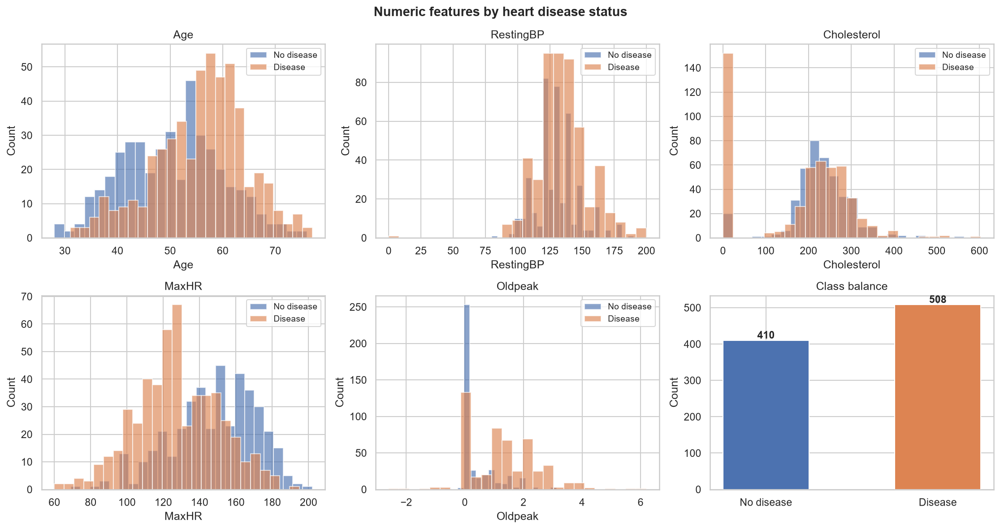
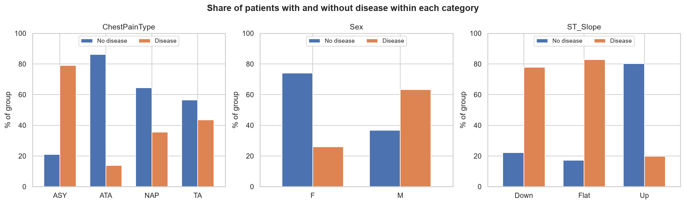
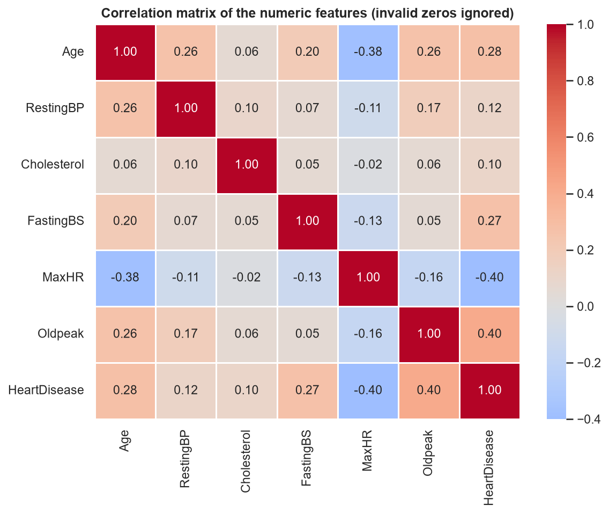
Encoding. The five text columns are one-hot encoded, which uses no statistics of the data and is therefore safe before splitting. We keep two views of the same information. The full one-hot view has one column per level (20 columns) and is used by the tree, because a tree can only ask “is this column above a threshold?” and so needs every level as its own column. The drop_first view leaves out one reference level per variable (15 columns: female, asymptomatic chest pain, LVH on the ECG, no exercise angina and a down-sloping ST segment) and is used by logistic regression. The indicators of one variable always add up to 1, which equals the intercept column, so with all of them the weights would not be unique; dropping one level gives unique weights, each measured against its reference level.
Invalid zeros. Cholesterol contains 172 rows equal to 0 and RestingBP one. Neither is physiologically possible, so we treat them as missing and replace them with the median of the non-zero training values (237 mg/dl and 130 mm Hg when fitted on the whole pool). A median is a statistic of the data, so it is always fitted on the training part only. We do not add a “was missing” indicator column: the patients with a missing cholesterol value are 88% diseased (against 48% of the others), so such a column would help a model, but it would mostly reflect which source hospital a patient came from and not the patient (Section 9).
Standardisation. Logistic regression with gradient descent is sensitive to feature scale, so its inputs are standardised manually, (x − μj)/σj, with μj and σj computed on the training part only. Trees are invariant to monotone rescaling and receive the unscaled values.
Protocol. We set aside a stratified 15% of the patients (138) as a test set. The other 85% (780 patients, the pool) is used for stratified 5-fold cross-validation: each fold in turn is the validation part (156 patients) and the other four form the training part (624 patients). In every fold the imputation medians and standardisation statistics come from that fold's training part only. Hyperparameters are chosen with cross-validation; the test set is evaluated once, at the very end, after refitting on the whole pool.
Model. A binary tree. Each internal node asks “is feature j ≤ threshold θ?” and sends the sample left or right. A leaf predicts the majority class of the training samples that reached it.
Objective. For a node with class proportions pk, the Gini impurity is
It is 0 for a pure node and 0.5 for an even two-class mix. A candidate split of a node t with n samples into a left child with nL and a right child with nR samples is scored by its Gini gain:
Training. Growth is recursive. At each node we try every feature and, for each, every midpoint between consecutive distinct values as a threshold, and keep the split with the largest ΔG. This exhaustive search is the optimisation procedure; there is no gradient involved. A split is only allowed if both children keep at least min_samples_leaf samples. Recursion stops when the node is pure, has fewer than min_samples_split samples, reaches max_depth, or no split has positive gain. Feature importance is the total sample-weighted Gini decrease contributed by each feature, normalised to sum to 1.
Cost. Our search recomputes the impurity of both children for every threshold, so a node with n samples and d features costs about O(d n2). Sorting each feature once and sweeping with running class counts would bring that to O(d n log n), which is what scikit-learn does. We kept the simple version because it is easy to read and verify; its price is measured in Section 8.
Model. The probability of disease is modelled as
and we predict class 1 when p̂ ≥ 0.5, which is the same as z ≥ 0: a linear decision boundary.
Objective. We minimise the binary cross-entropy, the negative log-likelihood of the labels under the model. There is no penalty term.
Gradients. Because σ′(z) = σ(z)(1 − σ(z)), the chain rule collapses and the gradient is the prediction error times the inputs:
Training. Starting from w = 0, b = 0, we repeat w ← w − α ∂L/∂w and b ← b − α ∂L/∂b for a fixed 2000 iterations, using all training patients at each step. The loss is convex, so there is no bad local minimum. For numerical safety, z is clipped to [−500, 500] before exponentiating and p̂ to [10−15, 1 − 10−15] before taking logarithms.
Numerical gradient check. Before training, we compared our analytical gradient with a central finite difference, (L(θ + h·ek) − L(θ − h·ek))/2h with h = 10−5, for all 15 weights and the bias, at random non-zero parameters. The largest absolute difference was 5.0×10−12, so the hand-derived gradient is correct.
Agreement with the libraries. In every setting reported below the scikit-learn model is run with the same hyperparameters on the same rows. The scratch and scikit-learn trees give identical predictions (Sections 6.1 and 6.2). Scikit-learn's logistic regression is run without a penalty (C = np.inf) and with a tight tolerance, so it minimises exactly the same objective as ours; the two agree on about 98% of predictions.
Tree. We tried max_depth from 1 to 10 and min_samples_leaf in {1, 5, 10, 20}, and chose the setting with the highest mean validation accuracy over the 5 folds; ties go to the tree with fewer leaves. Logistic regression. We tried α in {0.001, 0.01, 0.05, 0.1, 0.3, 0.5} with 2000 iterations and chose the one with the lowest mean validation cross-entropy, which uses the predicted probabilities and is therefore less noisy than accuracy on 156 patients. Library code was used only for splitting, metrics and the baselines, never inside our models.
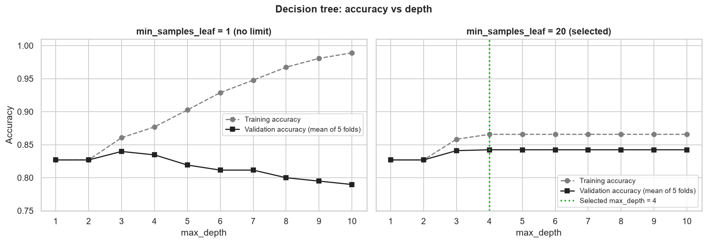
min_samples_leaf = 20 the tree stops growing at depth 4 and the gap between the curves is small.The selected tree has max_depth = 4 and min_samples_leaf = 20 (mean validation accuracy 0.842). For the drop_first tree used in Section 7.3, cross-validation selected depth 3 with min_samples_leaf = 1 (0.833).
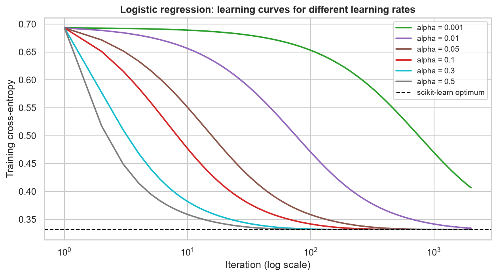
| Learning rate α | Validation cross-entropy | Validation accuracy | Training loss after 2000 steps |
|---|---|---|---|
| 0.001 | 0.4118 | 0.853 | 0.4067 |
| 0.01 | 0.3546 | 0.853 | 0.3342 |
| 0.05 | 0.3616 | 0.847 | 0.3320 |
| 0.1 | 0.3622 | 0.847 | 0.3320 |
| 0.3 | 0.3623 | 0.847 | 0.3320 |
| 0.5 | 0.3623 | 0.847 | 0.3320 |
The selected α is 0.01 (mean validation cross-entropy 0.3546). Rates from 0.05 upwards reach the same training loss as scikit-learn but give a slightly higher validation loss.
| Tree (full one-hot) | Tree (drop_first) | Logistic regression | |
|---|---|---|---|
| Fold 1 | 0.833 | 0.853 | 0.859 |
| Fold 2 | 0.801 | 0.808 | 0.801 |
| Fold 3 | 0.878 | 0.840 | 0.897 |
| Fold 4 | 0.846 | 0.821 | 0.853 |
| Fold 5 | 0.853 | 0.846 | 0.853 |
| Mean | 0.842 | 0.833 | 0.853 |
| Std | 0.028 | 0.019 | 0.034 |
| Model | Impl. | Accuracy | Precision | Recall | F1 | ROC-AUC | Agree |
|---|---|---|---|---|---|---|---|
| Tree, full one-hot | scratch | 0.842 ± 0.028 | 0.846 ± 0.020 | 0.875 ± 0.033 | 0.860 ± 0.025 | – | 1.000 |
| sklearn | 0.842 ± 0.028 | 0.846 ± 0.020 | 0.875 ± 0.033 | 0.860 ± 0.025 | – | ||
Tree, drop_first | scratch | 0.833 ± 0.019 | 0.832 ± 0.027 | 0.877 ± 0.018 | 0.854 ± 0.014 | – | 1.000 |
| sklearn | 0.833 ± 0.019 | 0.832 ± 0.027 | 0.877 ± 0.018 | 0.854 ± 0.014 | – | ||
| Logistic regression | scratch | 0.853 ± 0.034 | 0.858 ± 0.027 | 0.880 ± 0.043 | 0.868 ± 0.031 | 0.920 ± 0.036 | 0.987 |
| sklearn | 0.847 ± 0.048 | 0.857 ± 0.040 | 0.871 ± 0.053 | 0.863 ± 0.042 | 0.917 ± 0.038 |
Which model is best? Logistic regression has the highest mean accuracy (0.853), followed by the full one-hot tree (0.842) and the drop_first tree (0.833). The differences are small. Logistic regression is ahead of the full one-hot tree by 1.0 point on average (better in 3 of 5 folds, tied in 2, never worse), while each model's accuracy varies by about 3 points from fold to fold. Cross-validation therefore gives logistic regression a slight edge but cannot separate the two models with confidence. Recall is about the same (0.880 against 0.875) and precision is 0.858 against 0.846.
Scratch against library. The two decision trees are indistinguishable in every fold. For logistic regression the scratch model scores 0.6 points higher than scikit-learn (0.853 against 0.847), well within one standard deviation, and the predictions agree on 98.7% of the validation patients. One possible explanation, which we did not test, is that our gradient descent stops after a fixed 2000 steps, slightly before the exact minimum.
Cross-validation had already settled every choice: the two algorithms, their hyperparameters and their input columns. The test set was not used to choose between models or settings; it only gives one unbiased estimate of how the final tree and the final logistic regression, and their scikit-learn counterparts, perform on new patients. Each was refitted on the whole pool (780 patients) and evaluated once on the 138 test patients. (The tree on the drop_first columns was only an ablation in the cross-validation tables, so it is not evaluated here.)
| Model | Accuracy | Precision | Recall | F1 | ROC-AUC |
|---|---|---|---|---|---|
| Tree, full one-hot (scratch = scikit-learn) | 0.812 | 0.821 | 0.842 | 0.831 | – |
| Logistic regression, scratch | 0.877 | 0.915 | 0.855 | 0.884 | 0.929 |
| Logistic regression, scikit-learn | 0.884 | 0.905 | 0.882 | 0.893 | 0.932 |
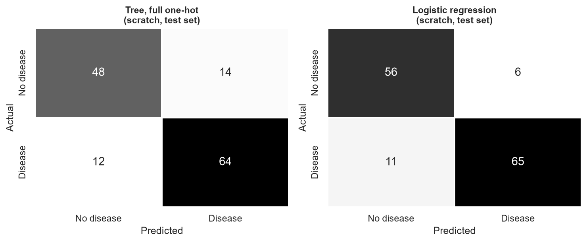
Logistic regression is ahead of the tree on the test set (0.877 against 0.812), the same direction as in cross-validation. The two trees make identical predictions. The two logistic regressions differ on 3 of 138 patients (agreement 0.978): the scratch model has the higher precision and the lower recall. One test patient is worth 0.7 points of accuracy, so a difference of 3 patients is within noise. The gap between logistic regression and the tree is 6.5 points on this test set but only 1.0 point in cross-validation. Each test accuracy is within about one standard error (about 3 points on 138 patients) of its cross-validation mean (logistic regression 0.877 against 0.853; tree 0.812 against 0.842), so this test set is somewhat more favourable to logistic regression than the average fold. The cross-validation figure is the more trustworthy estimate of the difference; the test set only confirms the direction.
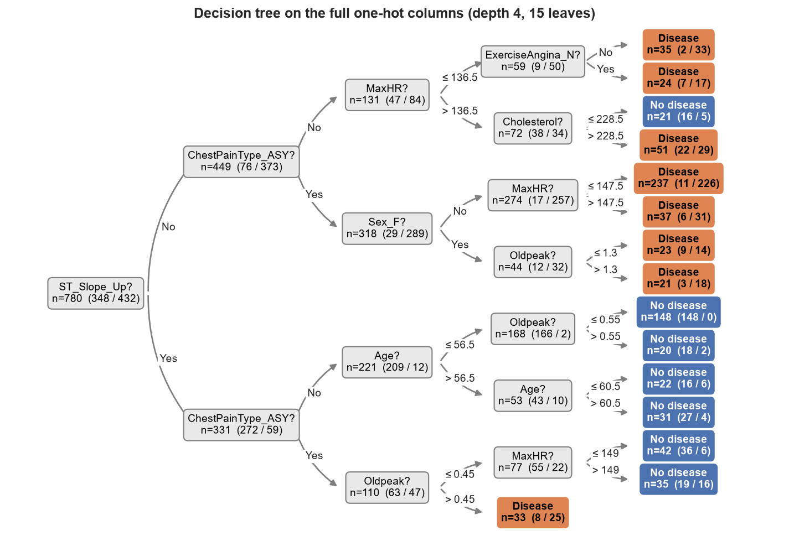
The first question is the exercise ST slope, and the second question, for every patient, is asymptomatic chest pain. For example, 237 male patients with asymptomatic chest pain, no upward ST slope and a maximum heart rate up to 147 are 95% diseased (226 of 237), while 148 patients with an upward slope, no asymptomatic chest pain, age up to 56 and Oldpeak up to 0.55 are all healthy. Every leaf holds at least 20 patients, a consequence of min_samples_leaf = 20.
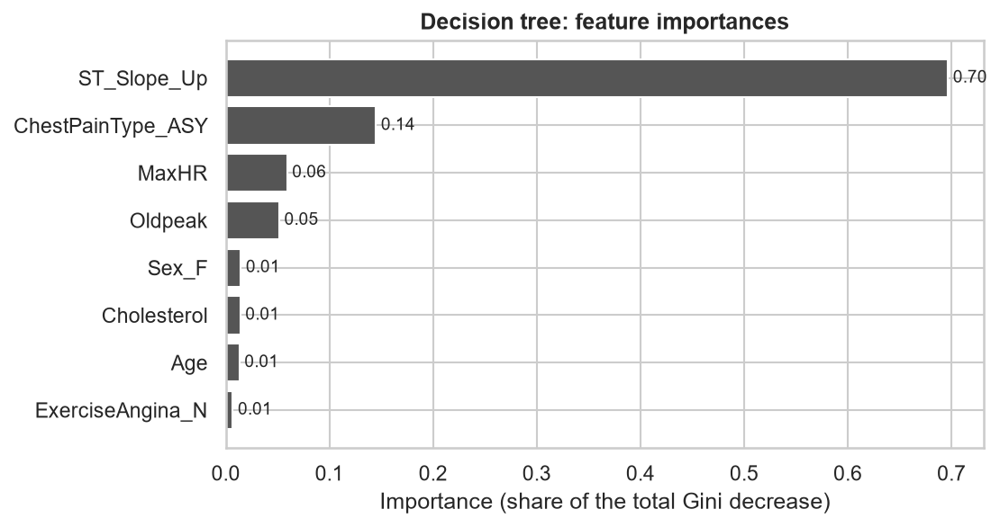
ST_Slope_Up (0.70) and ChestPainType_ASY (0.14) dominate.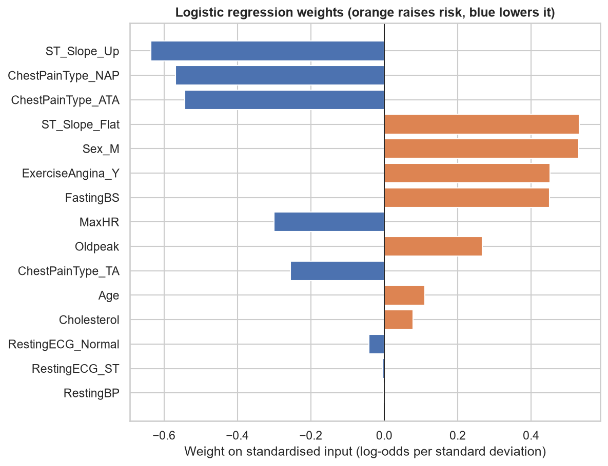
The largest weights are an upward ST slope (−0.64, lowers risk), non-anginal chest pain (−0.57) and atypical angina (−0.54), both relative to asymptomatic chest pain, a flat ST slope (+0.53) and male sex (+0.53). Exercise angina (+0.45) and high fasting blood sugar (+0.45) raise the risk, and a higher maximum heart rate (−0.30) lowers it. Cholesterol, resting blood pressure and the resting ECG carry little weight; for cholesterol this is partly a consequence of replacing 172 zero values by a constant.
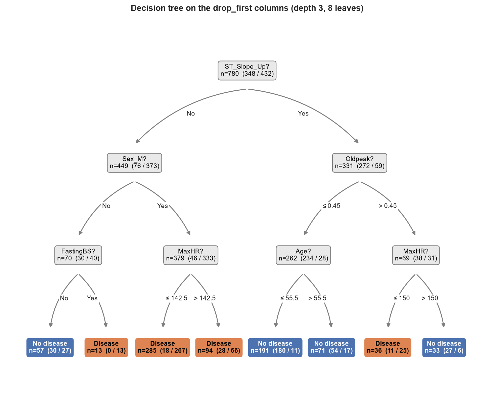
drop_first columns (depth 3, 8 leaves), where ChestPainType_ASY does not exist.With drop_first, asymptomatic chest pain (the chest-pain level most associated with disease) becomes the all-zero reference level and has no column; isolating those patients would take three questions instead of one. The effect turned out to be small: cross-validation selects a tree with 3 levels and 8 leaves on these columns (mean accuracy 0.833) against 0.842 for the full one-hot tree, and the full one-hot tree is better in only 3 of 5 folds (mean +0.9 points). The drop_first tree builds on ST_Slope_Up, Sex_M, Oldpeak, MaxHR, FastingBS and Age instead.
A word of caution about tuning. If the depth were chosen on a single small validation split, depths 1 and 2 can tie, and taking the first tie gives a tree with one split (the same ST_Slope_Up split under both encodings). That outcome depends on the tie-break and the split, not on the encoding alone; we saw it in an earlier single-split version of this analysis. Averaging over five validation sets and adding min_samples_leaf to the grid avoids it. We give the tree the full one-hot columns and logistic regression the drop_first columns; both contain exactly the same information.
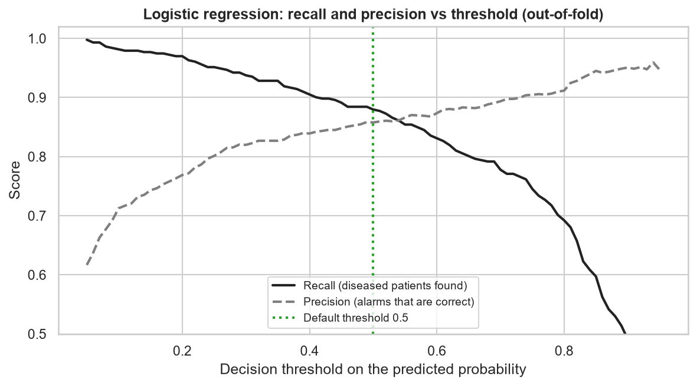
| Threshold | Recall | Precision | Missed patients | False alarms |
|---|---|---|---|---|
| 0.5 (default) | 0.880 | 0.858 | 52 | 63 |
| 0.4 | 0.905 | 0.839 | 41 | 75 |
| 0.3 | 0.938 | 0.820 | 27 | 89 |
| 0.2 | 0.970 | 0.769 | 13 | 126 |
Lowering the threshold from 0.5 to 0.3 cuts the missed patients from 52 to 27 at the price of 26 more false alarms. We do not pick a threshold, because that depends on how a missed patient is weighed against a false alarm; the figure only shows the trade-off.
| Model | Scratch | scikit-learn | Slower by |
|---|---|---|---|
| Decision tree | 84 ms | 2.2 ms | about 39× |
| Logistic regression | 187 ms | 8.5 ms | about 22× |
Across our runs the tree was 35–50 times slower and the logistic regression 20–30 times slower. For the tree, our search recomputes the impurity for every threshold (about O(d n2) per node) while scikit-learn sorts each feature once. For logistic regression, we run 2000 plain NumPy gradient steps, while scikit-learn's L-BFGS uses curvature information and stops when its tolerance is met. This is fine for 780 patients but would not scale to large data.
What the comparison shows. Both scratch implementations are correct: the gradient passes the finite-difference check, the scratch tree makes the same predictions as scikit-learn's in every fold and on the test set, and the scratch logistic regression agrees with scikit-learn on about 98% of the predictions, with differences that go in both directions. Logistic regression is probably slightly better than the tree: 0.853 against 0.842 in cross-validation (better in 3 of 5 folds, tied in 2) and 0.877 against 0.812 on the test set. Because each model varies by about 3 points between folds, we describe logistic regression as “probably slightly better” and not clearly better. A weighted sum of all features suits this data, while a tree has to approximate smooth relations, such as risk rising as the maximum heart rate falls, with steps, and its shape can change with small changes in the training data (we expect this, but did not measure it). The tree's advantage is that it can be read aloud (Figure 7).
Preprocessing and evaluation design matter. Fitting the imputation inside each fold avoids leakage, and the encoding affects the tree only slightly once it is tuned by cross-validation.
Limitations.
Possible improvements. A convergence-based stopping rule for gradient descent, a faster (sorted) split search for the tree, and an ensemble of trees to reduce the tree's variance.
Conclusion. We implemented a Gini-based decision tree and an unregularised gradient-descent logistic regression from scratch and compared them with scikit-learn using 5-fold cross-validation and a held-out test set, with all preprocessing fitted on training data only. The tree matches the library exactly, and the logistic regression matches it to within about 2% of predictions. Logistic regression was probably the better predictor (cross-validated accuracy 0.853 against 0.842, test accuracy 0.877 against 0.812), and both models relied mainly on the exercise ST slope and the chest-pain type. The main lesson for us was how much the evaluation design matters: a single split, one validation set and an arbitrary tie-break can each change which model, and which tree, looks best.
The environment needs Python 3.10 or newer with numpy, pandas, matplotlib, seaborn, scikit-learn and jupyter (requirements.txt; the notebook was run with Python 3.13, numpy 2.4.6, pandas 3.1.1, matplotlib 3.11.2, seaborn 0.13.2 and scikit-learn 1.9.1; C = np.inf for an unpenalised baseline needs a recent scikit-learn). Download heart.csv from the Kaggle URL in Section 2 and place it next to the notebook, then run heart_disease_ml.ipynb from top to bottom (about two minutes). The random seed is fixed to 42 for the splits, the folds and the scikit-learn baselines; the from-scratch models are deterministic, so every number in this report is reproduced by the notebook, except the fit times in Table 7. The notebook saves the figures used here in the figures/ folder.
Code and library acknowledgement. NumPy and pandas are used for array work and encoding, matplotlib and seaborn for plots, and scikit-learn for train_test_split, StratifiedKFold, the metrics and the baseline models. Imputation and standardisation are implemented by us. No other external code was used.